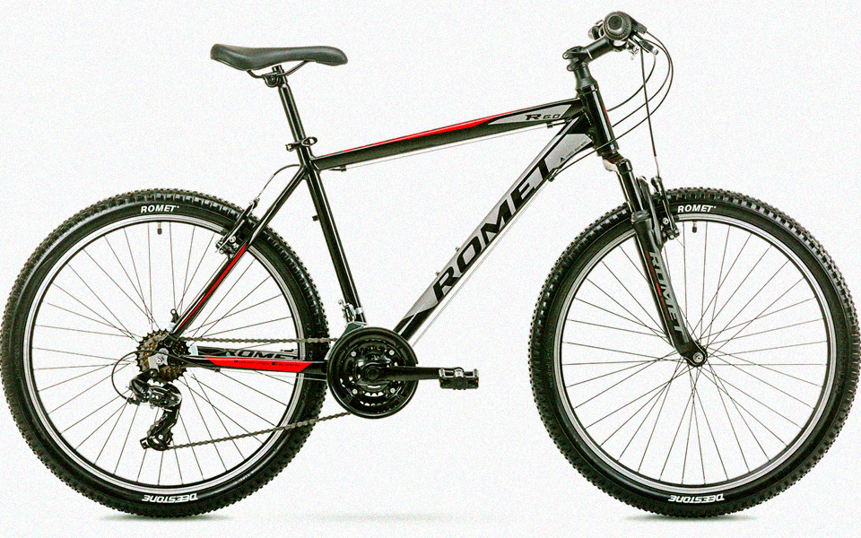
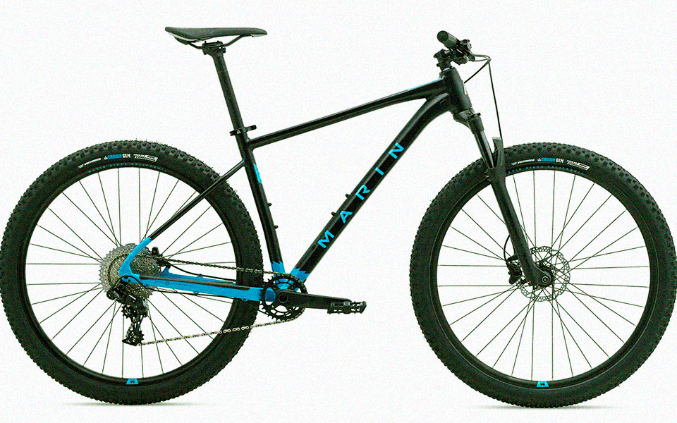
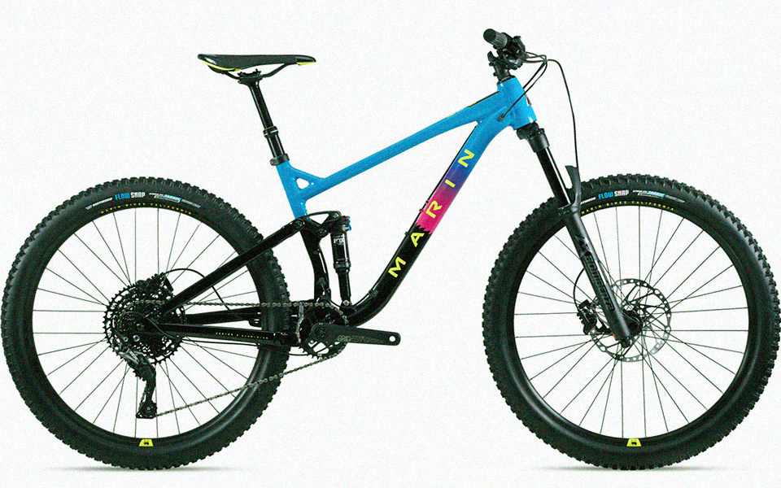
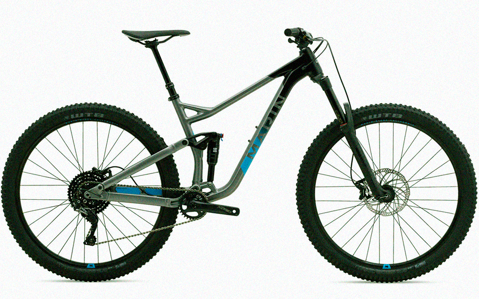
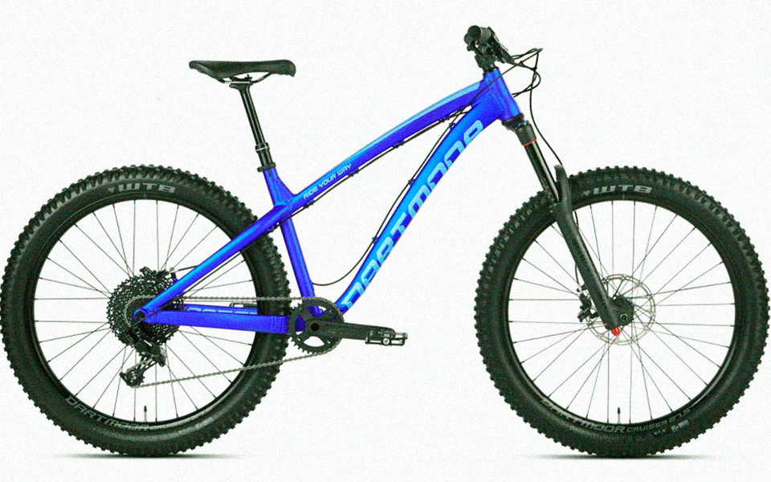
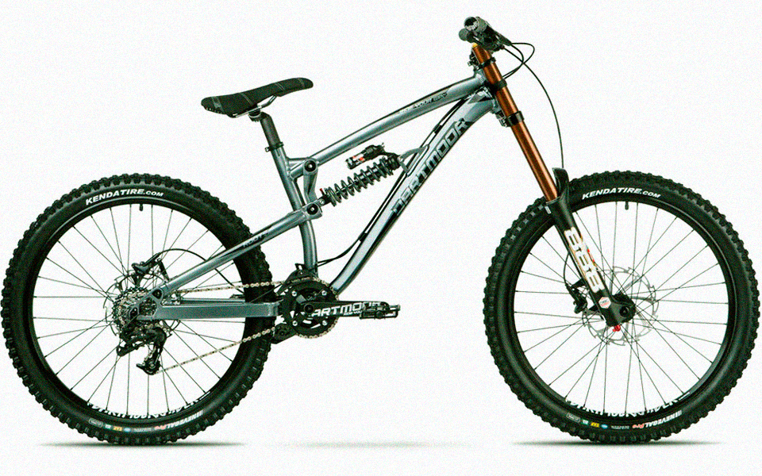
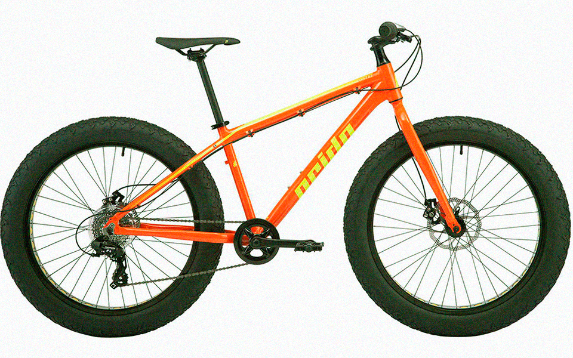

Велосипеди для бездоріжжя
Гірський велосипед
Цей тип велосипеда не потребує вступу. Очевидно, вони були створені для їзди поза дорогами. За призначенням цей тип можна розділити на велосипеди для даунхілу, фрірайду, ендуро, трейл, крос-кантрі. В окрему групу можна додати велосипеди для стріт, дьорт, слоуп-стайлу. Зазвичай вони оснащені 26/ 27,5/ 29 дюймовими колесами, широкими шинами з агресивним протектором та одним або двома амортизаторами. Переважно мають велику кількість передач, а завдяки своїй міцності та значній універсальності вони стали хорошим вибором також для їзди по місту.
Будь-який гірський велосипед ділиться ще на три категорії:
- Rigid — жорсткий велосипед без амортизаторів;
- Hardtail — велосипед обладнаний передньою амортизаційною вилкою;
- Двопідвіс — велосипед обладнаний передньою і задньою підвіскою.
Гірські велосипеди мають власні підгрупи в залежності від їх призначення, але велосипед з переднім амортизатором і класичною рамою — на сьогодні є найбільш поширеним та універсальним типом.
Підгрупи гірських велосипедів:
ATB (all-terrain bike) — прості, недорогі, любительські велосипеди для щоденних туристичних подорожей. У них один амортизатор, а іноді їх взагалі немає. Може бути обладнаний дисковими або, найчастіше, гальмами типу v-брейк.
XC (crosscountry, XC racing) — більш досконалі та легші велосипеди, для більш різкої позашляхової їзди. Цей тип велосипедів допомагає максимально швидко пересуватися по трасі з помірно перетнутим рельєфом, як з гори, так і в гору. Тут ми також знайдемо велосипеди зі зручною геометрією, більш спрямовані на любителів гірського туризму. Передній та задній амортизатор зазвичай має хід 80-100 мм.
Trail, All Mountain — крос-кантрі на стероїдах. За великим рахунком, це велосипеди, які підійдуть для будь-чого. Вони присвячені туристичним подорожам, а також швидкісному руху гірськими стежками — трейлами. Це щось середнє між крос-кантрі та ендуро. Зазвичай, ці велосипеди з повною підвіскою (120-140 мм). Та можна зустріти й хардейли.
Enduro — спортивна дисципіна, яка містить декілька етапів (підйоми, як в крос-кантрі та спуски як в даунхілі). Це велосипеди для їзди на високій швидкості по всьому чому попало тільки не по нормальній дорозі. Вилка з 150-180 мм ходом, а геометрія рами ще більше спрямована на спуск. Заточені під ендуро хардтейли також можна зустріти. Ідеально підійде для любительських змагань з міні-даунхілу.
Freeride/ Superenduro — ще більші можливості спуску. Проміжна ланка між байком для даунхілу та ендуро. Зазвичай для фрірайду застосовуються даунхільні велосипеди та ендуро. Комплектуються вилками й задніми підвісками з ходом близько 160-200 мм. Це велосипеди точно не для туристичних круїзів
DH (downhill) — це вид спорту, де враховується лише спуск. Велосипеди DH мають повну підвіску з довгим ходом (хід підвіски 200 мм та більше), дуже міцну раму і 4-х поршньові гальма та гальмівні диски великого діаметра. В гору або по рівній місцевості пересуватися на таких велосипедах досить важко. А складна конструкція рами і високі вимоги до міцності виправдовують високу вартість байка.
Fatbike
Це велосипед, побудований на основі гірських. Для нього характерні масивні шини шириною від 3,5 до 5 дюймів (100-125 мм). Такі широкі шини змушують байк дуже добре працювати під час руху по снігу та піску. Часто на таких велосипедах не використовується амортизатор, а його завдання бере на себе широка шина з низьким тиском.
